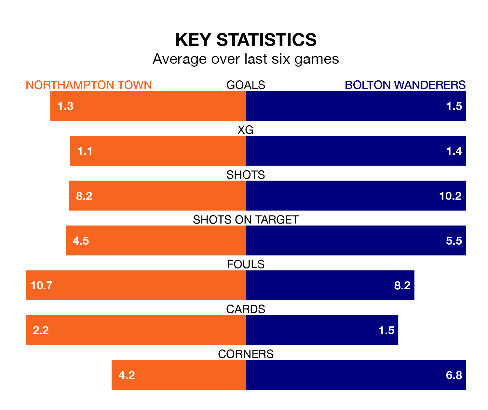

Bolton Wanderers are strong favourites to take all three points despite Northampton Town's home advantage in Saturday's match at the Sixfields Stadium.
*Betting Company* are offering odds of 1.91 on Bolton sealing the win, with the visitors sitting third in EFL League One table.
Northampton, who are 12th in the league and 18 points behind Bolton, are priced at 3.4 to win. A draw is set at 3.3.
With 51 goals in 28 games so far this season, Bolton are scoring more than average in the league with 1.8 goals per game. And they are conceding fewer than average, letting in 27 goals at a rate of 1.0 per game.
Northampton, meanwhile, are below average scorers, with 1.2 goals per game, compared to a league average of 1.3. They have conceded 1.4 goals per game.
With Nathan Baxter between the sticks, Wanderers can rely on one of the league's safest pair of hands. He has kept 12 clean sheets in his 28 appearances this season, and only one other 'keeper – Portsmouth's Will Norris – has been able to prevent the opposition scoring on more occasions in EFL League One.
In Town's net, Max Thompson has five clean sheets in 15 games. He has conceded a goal every 79 minutes, 30% more often than the 101 minutes between goals for Baxter.
The Cobblers are in mixed form in EFL League One, with three wins and a draw from their last six games.
With four wins and a draw over that period, the visitors' form is better – they have taken 13 points from 18, compared to the home team's 10.
Northampton's last match was on February 3, a 4-1 loss against Portsmouth, with Marc Leonard getting the goal for the Cobblers.
Bolton drew 1-1 with Barnsley last time out, also on February 3, with Zachary Ashworth on the scoresheet.
Updated: 11:18 (UTC), 08/02/24